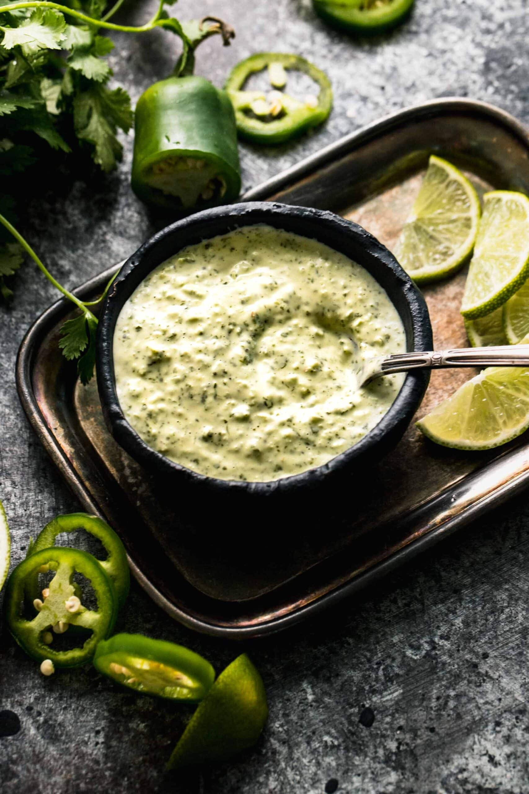

Aji Verde

Description
This Peruvian Green Sauce (or Aji Verde) is a spicy and versatile condiment. Made with jalapeno, cilantro, and fresh lime juice, plus Greek yogurt to give it a creamy texture. It’s an amazing dipping sauce, spread or dressing.
Ingredients
- 3 jalapenos (seeded, ribs removed and roughly chopped)
- 1 cup fresh cilantro leaves
- 2 green onions (chopped (green parts only))
- 2 cloves garlic (peeled)
- 1/2 cup mayonnaise
- 1/4 cup Greek yoghurt
- 1 tbsp lime juice
- 1/2 teaspoon salt
- 1/4 tsp black pepper
- 2 tbsp extra virgin olive oil
Steps
- Combine all ingredients except the olive oil in a blender process until smooth. With the motor running, slowly drizzle in olive oil. Transfer to a bowl and refrigerate until ready to serve.